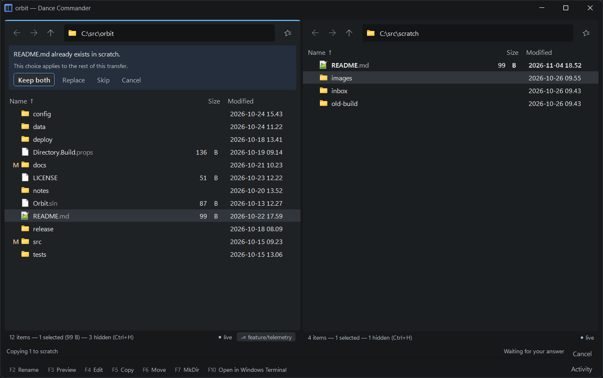
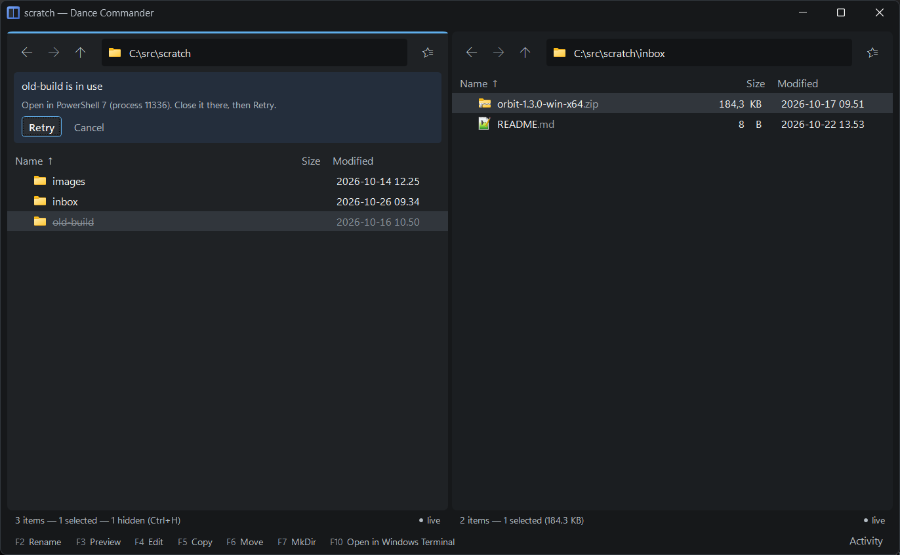
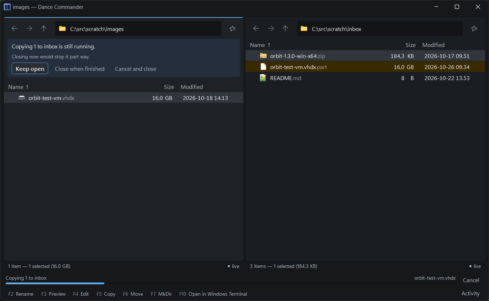
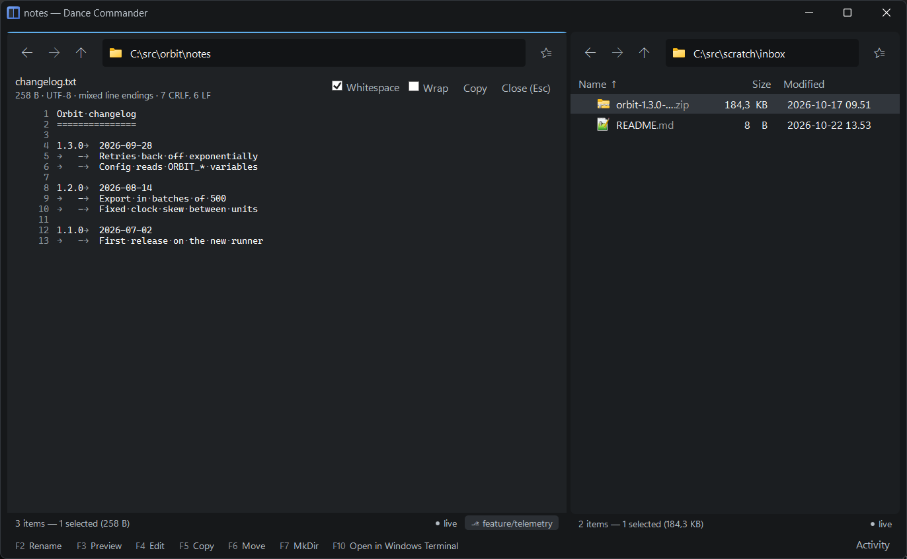

Working with files
Copying, moving, renaming and deleting, between the two panes, through the clipboard or by dragging. Every change is recorded with an undo and the shell command that would have done the same thing.
Marking
Marking works the commander way. Insert or Space marks the row under the cursor and moves down. Once something is marked, the arrow keys move only the cursor and leave the marks alone, so you can walk the list picking rows. Esc unmarks everything. Ctrl+A marks all, Ctrl+Shift+A unmarks all and Ctrl+I inverts.
Commands that change files (F5, F6, Del) act on the marked rows; commands that look at one file (Enter, F2, F3) act on the row under the cursor. With nothing marked, both act on the cursor's row. The mouse works as in Explorer: click, Ctrl+click, Shift+click.
Copy and move: F5 and F6
F5 copies the selection into the folder the other pane shows; F6 moves it there. Both work between any two kinds of place: local to server, server to server, out of an archive. Copies run in the background, in the strip along the bottom of the window, with an estimate of the time left, so you can keep working; when they are done the new files are washed in the accent colour for a moment, so you can see where they landed.
Local copies go through Windows' own copy, as Explorer's do, so a file keeps its modified date, its attributes and the mark that makes Windows warn before running a downloaded program.
When something is already there
A file of the same name asks, in the pane: Keep both (the default, giving the
new one a (2) name), Replace, Skip or
Cancel. The answer holds for the rest of that copy. Replace swaps
the new file in only once it is complete, so a cancelled or failed copy leaves the old one whole.
The file it replaces doesn't go to the Recycle Bin, so choose Keep both when in doubt. A read-only
file is not replaced, and the pane says so.
A folder onto a folder of the same name merges by default, and asks nothing when merging and replacing would leave the same files. Otherwise it asks before anything is copied: Merge into it, Replace it entirely (the question says how many files that would remove; the old folder goes to the Recycle Bin), or Skip this folder. Where there is no Recycle Bin (a stick, a network share, a server) the button reads Replace it, deleting the old one and the question says the old folder would be gone for good.
Files too big for the target
A FAT32 stick holds files of up to 4 GB. A copy with a larger file in it asks before anything is written: skip it, or cancel. Everything else is copied, and the activity log names what was left out.

Clipboard
Ctrl+C, Ctrl+X and Ctrl+V work with Explorer and every other program, beside F5 and F6. Paste always lands in the folder the pane shows, never in a folder that happens to be selected.
Paste does the most faithful thing the clipboard allows:
- Files are copied (or moved, after a cut), as a drop would be.
- An image, such as a screenshot, becomes a new PNG file named from the clock,
Pasted image 2026-09-21 14-30-45.png. - Text becomes a new UTF-8 text file the same way,
Pasted text 2026-09-21 14-30-45.txt.
The new file arrives selected, so F2 names it. A pasted image or text never overwrites anything.
Copying files and pasting them into the folder they came from makes a duplicate, named with
(2) as in Explorer. A cut pasted where it already is does nothing, and says so.
Ctrl+Shift+C copies the selection's paths as text. Copy name and Copy this folder's path are in the right-click menu and the palette.
Drag and drop
Drag between the panes, onto a folder row, onto the location chip, or to and from Explorer and other programs. The defaults follow Explorer: within one drive a drag moves and across drives it copies; hold Ctrl to copy or Shift to move. Between your computer and a server, between two servers, and out of an archive, a drag copies. The folder under the pointer is highlighted, and drops that make no sense (a folder into itself, files onto the folder they are already in) are refused before you let go.
Dragging one of several selected rows takes all of them. A drag has to travel a row's height before it starts, so a click that slips stays a click.
While dragging, hold the pointer still over another tab or over a folder row for a moment and it opens, so the drop can land there. Near the top or bottom edge of the list, the list scrolls.
Dropping things that are not files
- Attachments dragged out of Outlook arrive as new files. A name already taken
gets
(2); nothing is overwritten. They are marked as coming from the internet, as a download is, so Windows warns before opening them. - Text dragged from an editor or a browser becomes a new file,
Dropped text 2026-09-21 14-30-45.txt, as a paste would. If the drag also carries a file (an image from a web page, say), the file wins.
Each of these is an operation like any other: Ctrl+Z sends the new file to the Recycle Bin.
Rename, new folder and new file
F2 renames in place, with the name selected and the extension left out of the
selection. F7 makes a new folder and puts you straight into naming it; a name with
slashes, such as docs/2026, makes the folders inside each other in one go.
Shift+F4 makes a new file where you are: name it, and
it is made empty and opened in your editor, the same one F4 uses. No writing it first
and finding the folder again in a save dialog. As with F7, a name with slashes, such as
docs/notes.md, makes the folders it needs first. A file of that name already there is
opened as it is, never replaced. Ctrl+Z takes the new file away while it is still empty;
once you have written in it, to the Recycle Bin. On local folders only, where F4 edits.
Ctrl+Shift+G groups the selection into a new folder: it proposes a name from what the selected files have in common, makes the folder, and moves them in. If the name is taken it asks again. One Ctrl+Z puts everything back.
Renaming is one file at a time; there is no rename of many files by a pattern.
Split and join
Split into parts (right-click or the palette) cuts a large file into pieces of
a size you choose, 100 MB unless you say otherwise, for a server or a stick that won't take it
whole. The parts land beside it as name.001, name.002 and so on, with
name.sha256 to check the result. Join parts on the .001
puts the file back together beside them, and checks its size and checksum before it takes its
name. If the original is still there, the joined file gets a (2) name rather than
replacing it.
The parts are ordinary files: 7-Zip opens a .001, and copy /b or
cat joins them. Undo removes the parts, or the joined file, only while they are as
they were made and what they came from is still there.
Delete
Del sends the selection to the Recycle Bin, and Ctrl+Z brings back exactly what that delete sent, even if something of the same name has been deleted since. Shift+Del deletes permanently, after asking inline, with Cancel as the default.
Only the computer's own fixed drives have a Recycle Bin. On a network share, a USB stick or a server, Del asks “Delete … permanently?” too, because that is what it would be.
If a program has the file or folder open, the pane asks you to close it there and Retry, and names the program, for example “Open in Windows PowerShell in Windows Terminal (process 33536). Close it there, then Retry.” That includes a terminal whose current folder is the one you are deleting. The same goes for rename, move and copy.

Undo and the activity log
Every change Dance Commander makes to your files is an operation with a description, an undo, and its shell equivalent. Ctrl+Z undoes the most recent ones in turn: copies, moves, renames, new folders, grouping, pastes and drops, zips, splits and joins, and deletes that went to the Recycle Bin.
Undo is careful about what has happened since. Undoing a copy sends the copies to the Recycle Bin rather than deleting them, and keeps any that have been changed since, saying so. Undoing a move that replaced a folder brings the old folder back out of the Recycle Bin. What cannot come back is said rather than skipped over: a permanent delete, or a file that a Replace wrote over.
The Activity button at the bottom right lists what was done this session, each with the command that would do the same in a shell:
move C:\src\a.cs C:\src\old\a.csThe activity log, like the undo, lasts for the session. The log files keep a record beyond it.
Files are never lost
This is the promise the rest of the design serves. Whatever stops an operation part way (a cancel, an error, a full disk, a dropped connection, a crash), every file you had is still somewhere you can find it: where it was, where it was going, or in the Recycle Bin.
- Nothing is ever opened for writing at a name that holds a file. New content is written beside it under a
temporary name,
name.parton your disk and on an SFTP server,name.dc-upload-…on a WebDAV server, and takes the real name only once it is complete. A file left under one of those names after a failure is the unfinished copy, never the original. - A move removes each original only once its copy is whole. A move from a server to your disk writes each file through to the disk first.
- A folder replaced goes to the Recycle Bin. Where there is none, as on a server or a stick, it is set aside under a recognisable name and removed only once the new one is in place.
- Permanent deletion happens only when you asked for exactly that.
Copies in the background, and closing
Copies, moves and extractions are jobs in the strip along the bottom: each shows its progress and can be cancelled there. A question a job needs answered, such as a name clash, waits in the pane without stopping the rest of the window.
Closing the window while a job runs asks first: Keep open (the default),
Close when finished, or Cancel and close. A cancelled job leaves
no .part files behind.

While a job runs, Windows doesn't put the computer to sleep for being idle, and signing out or shutting down shows the job by name on Windows' own screen, as Explorer's copies do. Closing a laptop's lid or choosing Sleep still sleeps.
Preview: F3
F3 shows the file under the cursor over the listing; F3 or Esc closes it and puts you back where you were. It works the same for local files, files on a server and files inside an archive.
- Text is shown with its encoding and line endings stated: CRLF, LF, or mixed with the counts of each. Tabs are drawn as faint arrows so indentation looks the way a tool reads it, and trailing spaces are marked. You can select lines and copy just those.
- Images (PNG, JPEG, GIF, BMP, WebP, TIFF, ICO) are shown as images, turned the way the camera recorded, so a phone's portrait photo stands upright. The size in the header is the turned one.
- PDFs show their first page and say how many pages there are.
- Anything Windows can draw a thumbnail for is shown that way on your own disks, such as a video's first frame, or HEIC and camera raw photos when Windows has their extensions installed.
- What it can't show, it names: a binary says so, and an archive says what kind it is and that Enter goes inside.
A OneDrive file that is only online is not downloaded to preview it: you see OneDrive's own picture of it, or a line saying that previewing would download it. Arrowing through a OneDrive folder with the preview open leaves the files where they were. A cloud after the name marks a file that is only online, and a pin one that is always kept on this device; by default they show on the cursor row only, and Settings can show them on every row, as Explorer does.
What a file is comes from its content, not its name: a screenshot saved as .txt
still previews as an image. There is no hex view, and no preview of rich formats beyond their
picture: they belong in their own applications, and Enter opens them there.

Archives
Enter on a zip, 7z, rar or tar (plain, or compressed as gz, bz2 or xz) goes inside
it as if it were a folder, and archives inside archives work the same. Copying out of one is an
ordinary F5. Office documents (.docx and friends), OpenDocument files and
EPUBs are zips too, but Enter opens them in their application.
From the menu: Extract here unpacks into a folder named after the archive, beside it, and Extract to other pane does the same in the other pane's folder; both run as jobs. Compress into a zip asks for a name and makes a zip of the selection in this folder, on your disk or on a server. Zip is the only format it writes. Archives are read-only, so changing what is inside one means extracting, changing and zipping again. See Servers and archives for more.
Running things
Enter on a program or document starts it as Explorer would. If the program is slow to appear, the pane says it is starting, and a second Enter doesn't start it twice. F4 opens a file's text for editing and never runs it, which makes it the safe key on a script. Both work on files on your own disks; a file on a server or inside an archive has to be copied somewhere local first, though F3 previews it where it is.
Right-click (or Shift+F10, or the Menu key) shows the commands for the selection, including your own tools; see Tools and the command line.